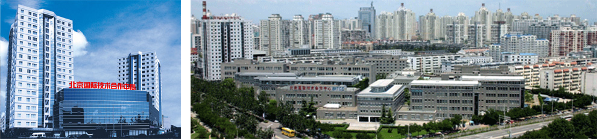

关于国合

北京国际技术合作中心（以下简称“国合中心”）原称北京技术交流培训中心，成立于1988年2月，是北京市国资委监督管理的企业化管理的事业单位。
1991年5月，国合中心正式建成开业。作为北京市“国际技术交流与合作的窗口，吸引外资和扩大合作的桥梁，培养跨世纪高新技术人才的基地”，其为北京市的改革开放和经济发展做出了重要的贡献。
1998年以来，国合中心蓄力创业，以市场为导向，以经济效益为中心，适时调整产业结构和组织机构，逐渐形成了以国际合作为切入点，以现代服务业为发展方向，以国际贸易、教育培训、高端房地资产管理和电子科技等板块并重的产业发展格局。
2012年以来，国合中心朝着“技术含量高、服务品质高、经营效益高、管理水平国际化”的现代服务业方向，在改革中砥砺前行、在困难中寻找先机，在变迁中坚守初心，不断将物业管理、国际贸易、电子产品制造、教育培训、股权投资和新兴企业六个产业板块做实做强，企业化运营的基础得到进一步夯实。
好风凭借力，扬帆正当时。当前，国合中心正以习近平总书记两次视察北京重要讲话和北京市第十二次党代会精神为指引，聚焦转企改制和转型升级，聚力“三次创业”，努力开辟北京市一流科技服务企业集团的新征程。